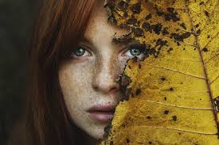
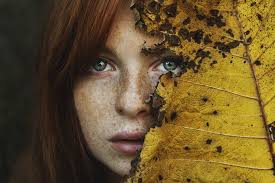

While most photographers specialize in one or two different types of photography experimenting with various photography styles can help to expand your skill set. The technical and creative skills required often cross multiple photography genres. This means that as you improve in one area, you can learn valuable lessons and techniques that make you a better photographer across other styles. By learning and practicing the seven different types of photography below, you can build a strong foundation for your photography career.

One of the most common photography styles, portrait photography, or portraiture, aims to capture the personality and mood of an individual or group. Images may be candid or posed, full body or close-ups. Either way, the subject’s face and eyes are typically in focus. Lighting and backdrop help to convey tone and emotion. Popular types of photography portraits include senior portraits, family portraits, engagement photos, and professional headshots. The best portrait photographers make clients feel completely comfortable, so that their expressions are natural and relaxed.Click here for more photo.
 

Photojournalism is a way of telling the story of a newsworthy (perhaps even historic) event or scene through photographs. Photojournalism should be as objective and truthful as possible and capturing candid moments as they happen is more important than getting picture-perfect shots. Generally, photojournalists attend planned events with the hope of capturing unplanned, unscripted moments. Their work is routinely published in magazines and newspapers.Click here for more photo.
Fashion photography showcases and glamorizes fashion clothing, shoes, and accessories to make them more desirable to consumers. It is commonly published in magazines and online. People may choose this niche over different types of photography because of the opportunity to be highly creative in making photographs eye-catching and appealing. Fashion photographers take a lot of full body shots and work in an array of locations, from fashion shows to studios with full lighting setups to city streets and open fields. They utilize many of the same skills as portrait photographers and must practice good teamwork and communication when working with shoot stylists, creative directors, and models. .Click here for more photo.
By catching athletes, coaches, and even fans at the perfect moment, sports photographs can depict the passion, drama, and emotion that fuels sporting events. Sports photographers must aim and shoot quickly to keep up with the action around them, and it’s best practice to use a higher ISO to shoot at a faster shutter speed. Sports photographers also usually use long, heavy lenses for zooming in on the action. Interesting angles can help make your work stand out in this competitive genre. .Click here for more photo.
Like it sounds, still life photography features inanimate objects—natural or manmade. Still life photography can be artistic or commercial. It is commonly used in stock photography as well as product advertising. (Think of the product images shown in catalogs, magazines, and billboards.) For still life photographers, object selection, arrangement, and lighting are key to getting a great shot. .Click here for more photo.
Editorial photography is taken to illustrate a story or article, typically for a magazine or newspaper. The subject of editorial photography can vary widely and is entirely dependent on the topic of the text it accompanies. Generally, for editorial photography, you’ll want to get shots that work for a variety of layouts, including horizontal and vertical compositions. When working in editorial photography, you are likely to work closely with writers and art directors, and demonstrating good communication skills and professionalism will help you succeed. .Click here for more photo.
Both the interior and exterior design of buildings and structures are the subject of architectural photography. From warehouses to city bridges to old country barns, this genre encompasses diverse structures. Often, the photograph showcases the structure’s most aesthetically pleasing parts, such as a particular beam or archway. Interesting materials and colors may also be emphasized. Lighting can be challenging in architectural photography and, for exteriors, photographers must know how to work with natural light. Gear such as a tilt-shift lens, a tripod, and a panorama head is often useful. Architectural photographs can be of value to designers, architects, leasing companies, and building investors. .Click here for more photo.